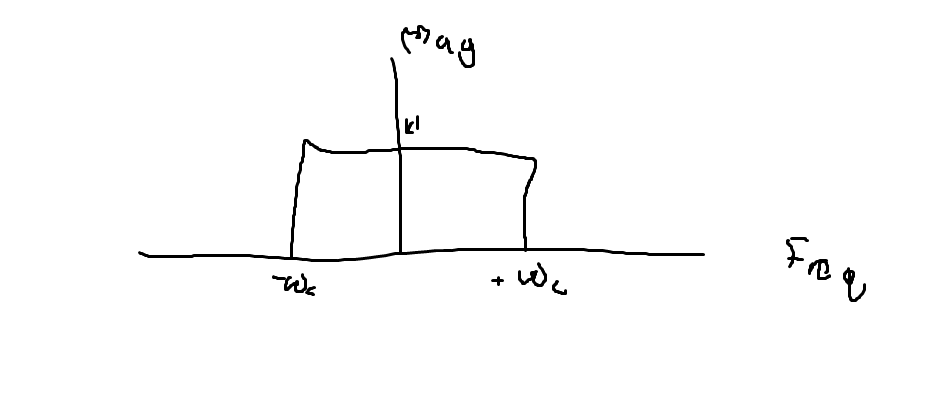

Up
Controls
Finite Impulse Response Filter - Overall Idea
Finite Impulse Response filters are designed to attenuate, pass, etc. a desired set of frequencies using a difference equation that has a finite impulse response.
They are typically used to separate or restore signals.
Filters in practice
High level gameplan
Our input signal is a digital signal x[n]. This signal has a known sampling time sr.
The image is passed through a filter with a frequency response of our choice, and then produces an output y[n].
Filtering is based on two fundamental ideas:
Convolution in the time domain is equal to multiplication in the frequency domain. - See LSI/LTI
The fourier transform of the impulse response is the frequency response - See Impulse Response
These ideas allow us to design a frequency response of interest (One that multiplies in the frequency domain to do what we want). Then, we can implement it in the time domain using convolution with the impulse response!
The power of FIR is that the Filter (in this case a low pass filter LPF) can be designed! This lets us control time/frequency characteristics.
The FIR is "finite" because its impulse response has a determined length. This necessarily means that the output y[n] must be stable.
(This is the case because computation of this operation in the time domain is done with Convolution which slides the filter impulse response like a window, multiplying by the input. Since the window is finite, the "sliding" operation will eventually not overlap the input, and the output will be zero)
Practical Implementation
Filter design - Window- Sinc
We can start with a desired frequency response for our filter. The desired FR has good properties when multiplied by our input(E.G low, band, high pass). Here is an example LPF:

We can find our impulse response from the frequency response by taking the inverse fourier transform (equation below)
$$h(t) = \frac{1}{2\pi}\int^{+inf}_{-inf}X(w)e^{jwt}dw$$
Where $$w=2\pi f$$
However, for a rectangular pulse, we will find that our given Impulse Response is a continuous, sinc function in the time domain. This is not possible to implement since sinc functions have infinite tails, look at negative time, and aren't discrete.
We can fix this issue by shifting the response to be in positive time, discritizing, and cutting off tails. However, this introduces high frequency lobes in the frequency domain due to truncation discontinuities. This process is shown below:
 We can fix these side lobes (to some extent) with windowing. Intuitively, this is smoothing out the truncation transition, getting rid of some of the high frequency characteristics that accompany it.
We can fix these side lobes (to some extent) with windowing. Intuitively, this is smoothing out the truncation transition, getting rid of some of the high frequency characteristics that accompany it.
Filtering
Things to consider:
Sampling Frequency - complexity/accuracy tradeoff
Filter Length - complexity/accuracy tradeoff
Windowing function - Hamming, Hann, Blackman, Rectangular, etc.
Frequency properties - What frequencies are attenuated in the frequency domain
Time-domain properties - rise time, overshoot, settling time, etc.
When implementing, there are two main steps:
Design a filter online - T-Filter
Implement the Convolution in code. The shifting operation in convolution is very expensive. But, this can be fixed with a circular buffer!
Keep a pointer to the oldest sample, when a new sample is measured, replace the oldest sample and the second oldest now becomes oldest!